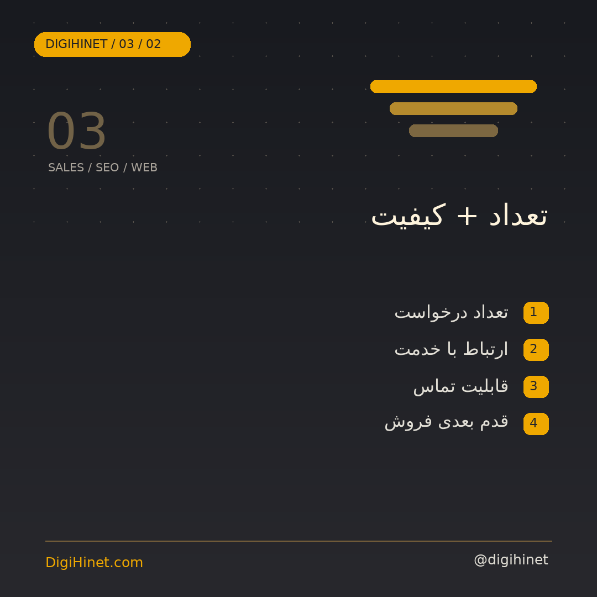
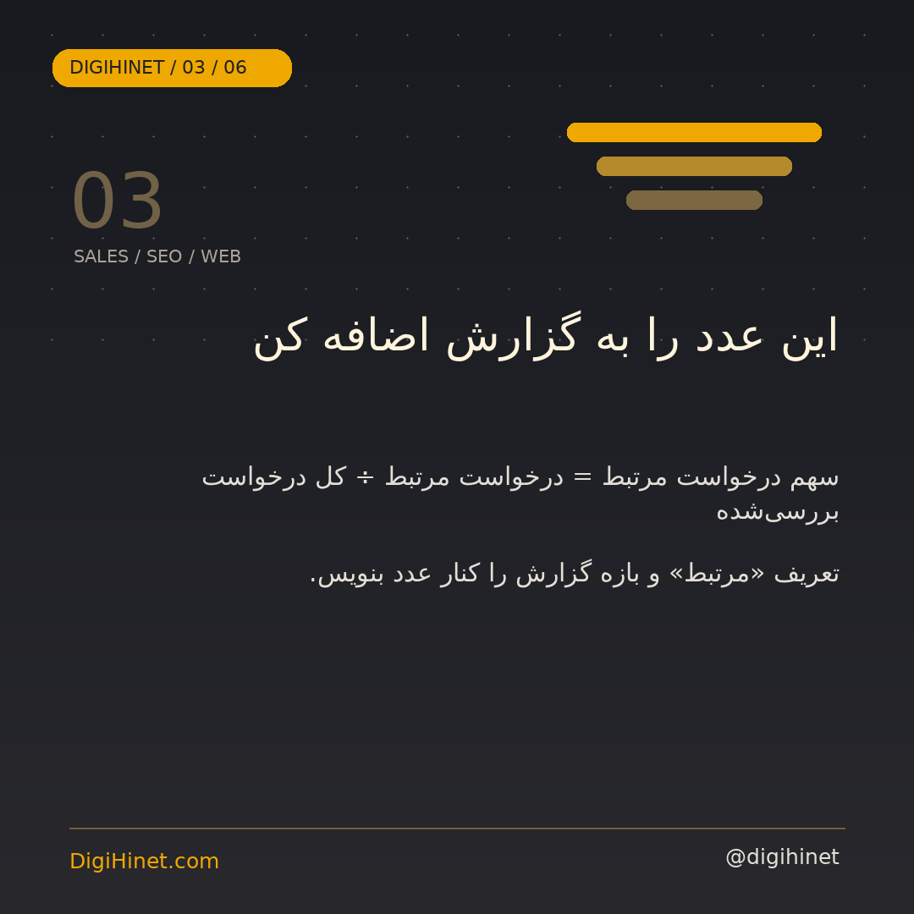

09:17 | text | dh20-d03-s1هر فرم پُرشده فرصت فروش نیست
ممکن است فرم کوتاهتر، درخواست بیشتری بیاورد؛ اما آیا درخواستها به خدمت تو مربوطاند؟ تعداد فرم را کنار کیفیت آن بخوان.
یک تعریف مشترک با فروش بنویس: «درخواست مرتبط» دقیقاً چه ویژگیهایی دارد؟ شهر، نیاز، زمان اجرا یا محدوده خدمت؟ فقط معیارهای لازم را نگه دار.
11:17 | photo | dh20-d03-s2تعداد + کیفیت

چکلیست امروز:
• تعداد درخواست
• ارتباط با خدمت
• قابلیت تماس
• قدم بعدی فروش
یکی را انتخاب کن و همان را بررسی کن.
13:17 | text | dh20-d03-s3از سایت دیجیهاینت: بهینه سازی نرخ تبدیل در سایت های B2B؛ ۷ گام تا سرنخ بهتر
برای ادامه بحث «سرنخ باکیفیت»، این راهنما را بخوان:
بهینه سازی نرخ تبدیل در سایت های B2B یعنی افزایش سهم بازدیدکنندگانی که به درخواست مرتبط، جلسه مفید و فرصت فروش واقعی می رسند. برای شروع، تبدیل هدف را با تیم فروش تعریف کنید، ثبت صحیح درخواست ها را کنترل کنید، یک مانع مستند را انتخاب کنید و اثر اصلاح را همراه کیفیت سرنخ…
پیشنهاد مطالعه: یک نکته قابل اجرا را از مقاله انتخاب کن و به مسئله امروز کسبوکارت وصل کن.
مطالعه راهنما15:17 | poll | dh20-d03-s4سؤال امروز: سرنخ باکیفیت
دو صفحه داریم: A با ۳۰ درخواست مرتبط و B با ۶۰ درخواست نامرتبط. کدام را صرفاً با تعداد برنده بدانیم؟
- صفحه B
- هیچکدام؛ کیفیت و هدف هم لازم است
- صفحهای با بازدید بیشتر
پاسخ برای بازبینی
تعداد خام، کیفیت فرصت را نشان نمیدهد. ابتدا تعریف سرنخ مرتبط را ثابت کن و سپس هزینه و پیشروی هر گروه را بسنج.تمرین امروز: سرنخ باکیفیت
۱۰ فرم اخیر را با سه برچسب مرتبط، نامرتبط و اطلاعات ناکافی دستهبندی کن. برای هر مورد یک دلیل کوتاه بنویس؛ از حدس درباره توان خرید افراد پرهیز کن.
پاسخ سؤال ساعت ۱۵:
تعداد خام، کیفیت فرصت را نشان نمیدهد. ابتدا تعریف سرنخ مرتبط را ثابت کن و سپس هزینه و پیشروی هر گروه را بسنج.
21:17 | photo | dh20-d03-s6این عدد را به گزارش اضافه کن

سهم درخواست مرتبط = درخواست مرتبط ÷ کل درخواست بررسیشده
تعریف «مرتبط» و بازه گزارش را کنار عدد بنویس.
این یادآوری را برای مرور هفتگی نگه دار.